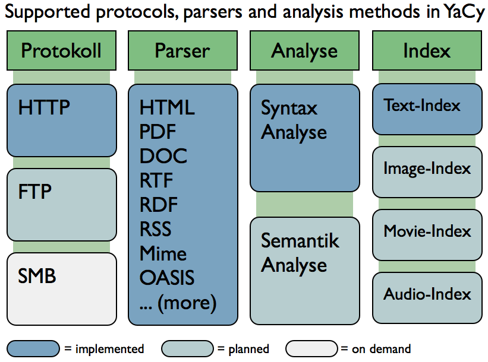
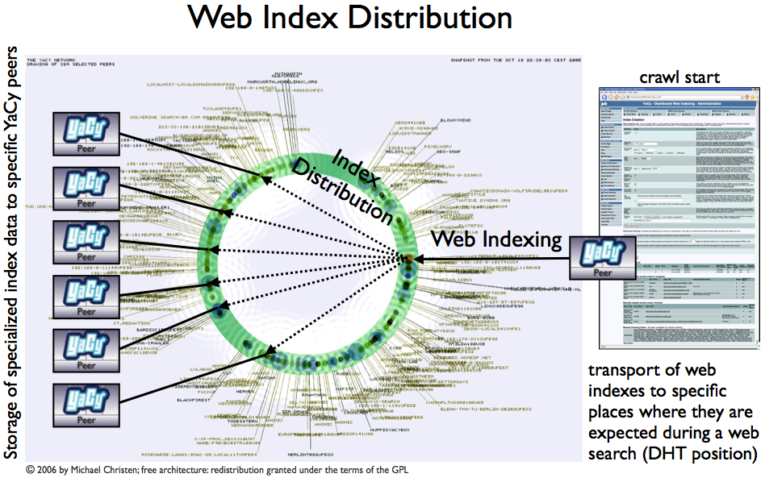
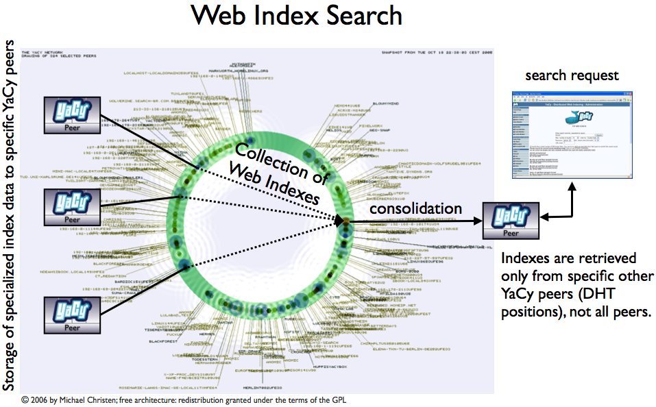
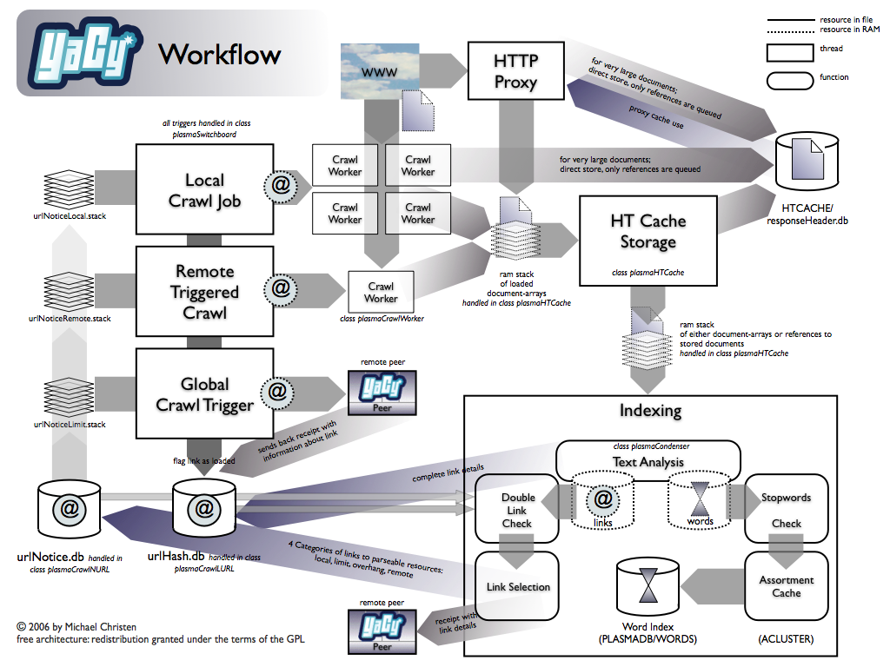

Technology Details

YaCy has a large number of document parsers included.

When YaCy has indexed a number of web pages, it starts to distribute parts of the web index
to other YaCy peers. That causes that all indexes that users of YaCy generate are mixed with each other.
The indexes are stored to such peers that they can be found efficiently again.

When a web search in you local peer is done, it searches not only the own database, but also
databases of other YaCy peers. Only those peers are searched that should have the specific index.

The workflow inside YaCy. There is no user action required for steering of the workflow,
but the user interface offers a large number of monitoring pages that show status information about the queues and stacks.
|